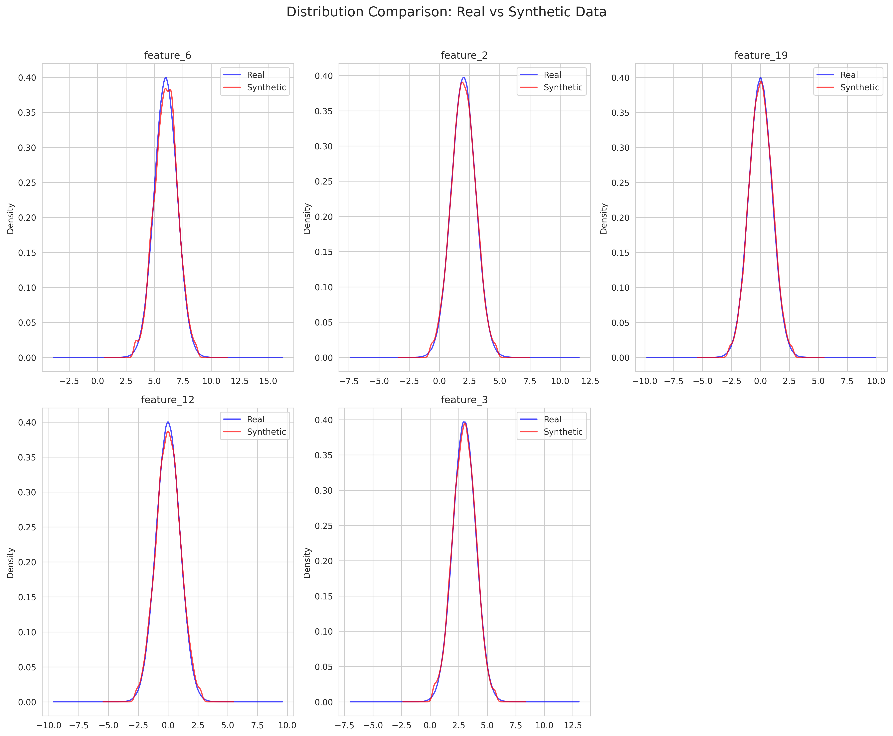
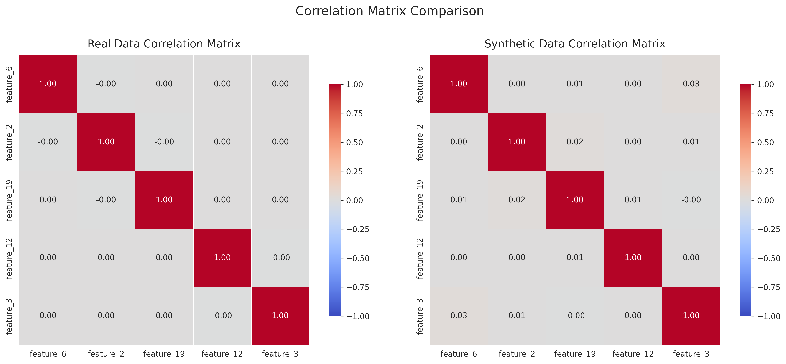

Dataset Overview
| Metric |
Real Data |
Synthetic Data |
| Number of rows |
1000000 |
10000 |
| Number of columns |
21 |
21 |
| Memory usage |
160.22 MB |
1.60 MB |
Generator Information
Method: gaussian, Samples: 10000, Random State: None
Overall Quality Metrics
| Metric |
Value |
Interpretation |
| real_data_size |
5000.0000 |
Acceptable |
| synthetic_data_size |
5000.0000 |
Acceptable |
| size_ratio |
1.0000 |
Acceptable |
| num_numerical_columns |
20.0000 |
Acceptable |
| num_categorical_columns |
0.0000 |
Acceptable |
| avg_ks_statistic |
0.0192 |
Distributions are very similar |
| avg_jensen_shannon_dist |
0.0557 |
Acceptable |
| avg_mean_relative_error |
5.6006 |
Poor |
| avg_std_relative_error |
0.0151 |
Excellent |
| correlation_mean_difference |
0.0172 |
Excellent |
| correlation_max_difference |
0.0701 |
Excellent |
| privacy_risk |
0.0000 |
Acceptable |
| utility_score |
0.9818 |
Excellent |
| statistical_similarity |
0.9818 |
Acceptable |
| privacy_score |
1.0000 |
Excellent |
| quality_score |
0.9863 |
Excellent |
Numerical Column Metrics
Column: feature_1
| Metric |
Value |
| mean_real |
0.9717 |
| mean_synthetic |
0.9789 |
| mean_relative_error |
0.0074 |
| std_real |
0.9967 |
| std_synthetic |
1.0143 |
| std_relative_error |
0.0177 |
| min_real |
-2.5786 |
| min_synthetic |
-1.7390 |
| max_real |
4.2878 |
| max_synthetic |
3.7336 |
| Kolmogorov-Smirnov statistic |
0.0134 |
| Kolmogorov-Smirnov p-value |
0.7605 |
| Jensen-Shannon distance |
0.0524 |
Column: feature_2
| Metric |
Value |
| mean_real |
1.9901 |
| mean_synthetic |
2.0071 |
| mean_relative_error |
0.0085 |
| std_real |
0.9912 |
| std_synthetic |
0.9944 |
| std_relative_error |
0.0032 |
| min_real |
-1.9455 |
| min_synthetic |
-0.6859 |
| max_real |
5.6112 |
| max_synthetic |
4.7259 |
| Kolmogorov-Smirnov statistic |
0.0204 |
| Kolmogorov-Smirnov p-value |
0.2492 |
| Jensen-Shannon distance |
0.0553 |
Column: feature_3
| Metric |
Value |
| mean_real |
3.0130 |
| mean_synthetic |
2.9919 |
| mean_relative_error |
0.0070 |
| std_real |
0.9947 |
| std_synthetic |
0.9992 |
| std_relative_error |
0.0045 |
| min_real |
-0.2723 |
| min_synthetic |
0.3188 |
| max_real |
6.8455 |
| max_synthetic |
5.6938 |
| Kolmogorov-Smirnov statistic |
0.0178 |
| Kolmogorov-Smirnov p-value |
0.4067 |
| Jensen-Shannon distance |
0.0592 |
Column: feature_4
| Metric |
Value |
| mean_real |
4.0224 |
| mean_synthetic |
3.9981 |
| mean_relative_error |
0.0060 |
| std_real |
1.0034 |
| std_synthetic |
0.9995 |
| std_relative_error |
0.0039 |
| min_real |
0.3759 |
| min_synthetic |
1.3138 |
| max_real |
7.3936 |
| max_synthetic |
6.6923 |
| Kolmogorov-Smirnov statistic |
0.0154 |
| Kolmogorov-Smirnov p-value |
0.5937 |
| Jensen-Shannon distance |
0.0577 |
Column: feature_5
| Metric |
Value |
| mean_real |
4.9906 |
| mean_synthetic |
5.0086 |
| mean_relative_error |
0.0036 |
| std_real |
1.0068 |
| std_synthetic |
0.9653 |
| std_relative_error |
0.0412 |
| min_real |
1.6042 |
| min_synthetic |
2.3246 |
| max_real |
9.2165 |
| max_synthetic |
7.6307 |
| Kolmogorov-Smirnov statistic |
0.0172 |
| Kolmogorov-Smirnov p-value |
0.4503 |
| Jensen-Shannon distance |
0.0559 |
Column: feature_6
| Metric |
Value |
| mean_real |
6.0254 |
| mean_synthetic |
6.0243 |
| mean_relative_error |
0.0002 |
| std_real |
0.9939 |
| std_synthetic |
0.9946 |
| std_relative_error |
0.0007 |
| min_real |
2.7014 |
| min_synthetic |
3.3184 |
| max_real |
10.1417 |
| max_synthetic |
8.7029 |
| Kolmogorov-Smirnov statistic |
0.0158 |
| Kolmogorov-Smirnov p-value |
0.5605 |
| Jensen-Shannon distance |
0.0520 |
Column: feature_7
| Metric |
Value |
| mean_real |
7.0115 |
| mean_synthetic |
6.9740 |
| mean_relative_error |
0.0053 |
| std_real |
1.0022 |
| std_synthetic |
1.0018 |
| std_relative_error |
0.0005 |
| min_real |
3.1024 |
| min_synthetic |
4.2162 |
| max_real |
10.6979 |
| max_synthetic |
9.7744 |
| Kolmogorov-Smirnov statistic |
0.0288 |
| Kolmogorov-Smirnov p-value |
0.0316 |
| Jensen-Shannon distance |
0.0517 |
Column: feature_8
| Metric |
Value |
| mean_real |
7.9959 |
| mean_synthetic |
7.9827 |
| mean_relative_error |
0.0016 |
| std_real |
0.9906 |
| std_synthetic |
0.9659 |
| std_relative_error |
0.0249 |
| min_real |
4.2825 |
| min_synthetic |
5.2969 |
| max_real |
11.9002 |
| max_synthetic |
10.6791 |
| Kolmogorov-Smirnov statistic |
0.0182 |
| Kolmogorov-Smirnov p-value |
0.3791 |
| Jensen-Shannon distance |
0.0450 |
Column: feature_9
| Metric |
Value |
| mean_real |
9.0207 |
| mean_synthetic |
8.9866 |
| mean_relative_error |
0.0038 |
| std_real |
1.0034 |
| std_synthetic |
1.0208 |
| std_relative_error |
0.0173 |
| min_real |
5.6525 |
| min_synthetic |
6.2222 |
| max_real |
12.4294 |
| max_synthetic |
11.7521 |
| Kolmogorov-Smirnov statistic |
0.0240 |
| Kolmogorov-Smirnov p-value |
0.1123 |
| Jensen-Shannon distance |
0.0644 |
Column: feature_10
| Metric |
Value |
| mean_real |
10.0203 |
| mean_synthetic |
9.9956 |
| mean_relative_error |
0.0025 |
| std_real |
1.0093 |
| std_synthetic |
0.9918 |
| std_relative_error |
0.0173 |
| min_real |
6.1168 |
| min_synthetic |
7.2814 |
| max_real |
13.8784 |
| max_synthetic |
12.6963 |
| Kolmogorov-Smirnov statistic |
0.0158 |
| Kolmogorov-Smirnov p-value |
0.5605 |
| Jensen-Shannon distance |
0.0549 |
Column: feature_11
| Metric |
Value |
| mean_real |
0.0131 |
| mean_synthetic |
-0.0403 |
| mean_relative_error |
4.0817 |
| std_real |
1.0088 |
| std_synthetic |
0.9881 |
| std_relative_error |
0.0205 |
| min_real |
-3.8683 |
| min_synthetic |
-2.6968 |
| max_real |
3.2510 |
| max_synthetic |
2.6769 |
| Kolmogorov-Smirnov statistic |
0.0360 |
| Kolmogorov-Smirnov p-value |
0.0031 |
| Jensen-Shannon distance |
0.0600 |
Column: feature_12
| Metric |
Value |
| mean_real |
0.0129 |
| mean_synthetic |
0.0202 |
| mean_relative_error |
0.5672 |
| std_real |
1.0099 |
| std_synthetic |
1.0105 |
| std_relative_error |
0.0007 |
| min_real |
-3.4255 |
| min_synthetic |
-2.7126 |
| max_real |
3.4021 |
| max_synthetic |
2.7599 |
| Kolmogorov-Smirnov statistic |
0.0134 |
| Kolmogorov-Smirnov p-value |
0.7605 |
| Jensen-Shannon distance |
0.0562 |
Column: feature_13
| Metric |
Value |
| mean_real |
-0.0019 |
| mean_synthetic |
-0.0321 |
| mean_relative_error |
16.0374 |
| std_real |
0.9973 |
| std_synthetic |
1.0259 |
| std_relative_error |
0.0286 |
| min_real |
-3.6632 |
| min_synthetic |
-2.7960 |
| max_real |
4.2726 |
| max_synthetic |
2.7337 |
| Kolmogorov-Smirnov statistic |
0.0328 |
| Kolmogorov-Smirnov p-value |
0.0092 |
| Jensen-Shannon distance |
0.0610 |
Column: feature_14
| Metric |
Value |
| mean_real |
0.0155 |
| mean_synthetic |
0.0010 |
| mean_relative_error |
0.9341 |
| std_real |
0.9987 |
| std_synthetic |
0.9958 |
| std_relative_error |
0.0029 |
| min_real |
-3.4405 |
| min_synthetic |
-2.7057 |
| max_real |
3.6965 |
| max_synthetic |
2.7233 |
| Kolmogorov-Smirnov statistic |
0.0128 |
| Kolmogorov-Smirnov p-value |
0.8074 |
| Jensen-Shannon distance |
0.0557 |
Column: feature_15
| Metric |
Value |
| mean_real |
0.0010 |
| mean_synthetic |
0.0069 |
| mean_relative_error |
5.9945 |
| std_real |
0.9848 |
| std_synthetic |
1.0065 |
| std_relative_error |
0.0220 |
| min_real |
-3.6556 |
| min_synthetic |
-2.6638 |
| max_real |
4.4089 |
| max_synthetic |
2.6703 |
| Kolmogorov-Smirnov statistic |
0.0162 |
| Kolmogorov-Smirnov p-value |
0.5280 |
| Jensen-Shannon distance |
0.0561 |
Column: feature_16
| Metric |
Value |
| mean_real |
0.0003 |
| mean_synthetic |
-0.0098 |
| mean_relative_error |
35.0750 |
| std_real |
0.9960 |
| std_synthetic |
0.9741 |
| std_relative_error |
0.0221 |
| min_real |
-3.7539 |
| min_synthetic |
-2.6225 |
| max_real |
3.6084 |
| max_synthetic |
2.5992 |
| Kolmogorov-Smirnov statistic |
0.0112 |
| Kolmogorov-Smirnov p-value |
0.9125 |
| Jensen-Shannon distance |
0.0511 |
Column: feature_17
| Metric |
Value |
| mean_real |
0.0085 |
| mean_synthetic |
0.0066 |
| mean_relative_error |
0.2206 |
| std_real |
0.9947 |
| std_synthetic |
0.9994 |
| std_relative_error |
0.0047 |
| min_real |
-3.1876 |
| min_synthetic |
-2.7124 |
| max_real |
4.4081 |
| max_synthetic |
2.7318 |
| Kolmogorov-Smirnov statistic |
0.0128 |
| Kolmogorov-Smirnov p-value |
0.8074 |
| Jensen-Shannon distance |
0.0593 |
Column: feature_18
| Metric |
Value |
| mean_real |
-0.0067 |
| mean_synthetic |
-0.0260 |
| mean_relative_error |
2.9014 |
| std_real |
0.9976 |
| std_synthetic |
1.0082 |
| std_relative_error |
0.0106 |
| min_real |
-3.7725 |
| min_synthetic |
-2.7050 |
| max_real |
3.1869 |
| max_synthetic |
2.6714 |
| Kolmogorov-Smirnov statistic |
0.0206 |
| Kolmogorov-Smirnov p-value |
0.2392 |
| Jensen-Shannon distance |
0.0540 |
Column: feature_19
| Metric |
Value |
| mean_real |
0.0016 |
| mean_synthetic |
0.0387 |
| mean_relative_error |
23.9050 |
| std_real |
1.0091 |
| std_synthetic |
0.9852 |
| std_relative_error |
0.0237 |
| min_real |
-3.7512 |
| min_synthetic |
-2.7028 |
| max_real |
3.8878 |
| max_synthetic |
2.7607 |
| Kolmogorov-Smirnov statistic |
0.0236 |
| Kolmogorov-Smirnov p-value |
0.1235 |
| Jensen-Shannon distance |
0.0552 |
Column: feature_20
| Metric |
Value |
| mean_real |
0.0008 |
| mean_synthetic |
0.0193 |
| mean_relative_error |
22.2491 |
| std_real |
1.0140 |
| std_synthetic |
0.9782 |
| std_relative_error |
0.0353 |
| min_real |
-4.5474 |
| min_synthetic |
-2.6596 |
| max_real |
3.5867 |
| max_synthetic |
2.6764 |
| Kolmogorov-Smirnov statistic |
0.0182 |
| Kolmogorov-Smirnov p-value |
0.3791 |
| Jensen-Shannon distance |
0.0565 |
Data Visualizations
Distributions Comparison

Correlation Matrix Comparison

Data Samples
Real Data Sample
| feature_1 |
feature_2 |
feature_3 |
feature_4 |
feature_5 |
feature_6 |
feature_7 |
feature_8 |
feature_9 |
feature_10 |
feature_11 |
feature_12 |
feature_13 |
feature_14 |
feature_15 |
feature_16 |
feature_17 |
feature_18 |
feature_19 |
feature_20 |
target |
| 1.496714 |
2.169172 |
4.064722 |
2.892840 |
4.815994 |
5.797254 |
7.166571 |
8.017076 |
9.170982 |
11.224528 |
-1.482041 |
-1.018500 |
-0.932771 |
-0.826353 |
-1.723592 |
-0.125932 |
-0.617163 |
1.539637 |
-1.087963 |
0.088477 |
0 |
| 0.861736 |
1.878495 |
2.503287 |
2.230638 |
5.043793 |
6.910803 |
4.794584 |
6.620612 |
7.282231 |
11.759238 |
0.204001 |
-0.111976 |
-0.407683 |
0.350853 |
0.671728 |
-0.570390 |
0.361864 |
1.152902 |
-0.922906 |
1.886183 |
1 |
| 1.647689 |
3.156625 |
3.129260 |
3.662192 |
6.182518 |
7.041890 |
8.527111 |
7.457036 |
7.331238 |
9.905432 |
-0.015285 |
0.004666 |
0.338182 |
0.361589 |
0.869578 |
0.064401 |
1.061850 |
0.279334 |
-1.163943 |
0.194942 |
1 |
| 2.523030 |
2.200086 |
1.520307 |
4.502378 |
4.715680 |
6.397202 |
7.509416 |
6.864638 |
7.684778 |
9.924350 |
-0.912439 |
0.697829 |
0.555014 |
-0.317531 |
-1.301193 |
0.845784 |
0.861390 |
0.887796 |
0.854134 |
1.632714 |
1 |
| 0.765847 |
2.864611 |
2.690153 |
4.443503 |
4.674846 |
6.360989 |
5.466305 |
7.387519 |
9.681952 |
9.737077 |
-3.065458 |
0.371964 |
-0.300118 |
-2.014426 |
1.635533 |
0.322967 |
1.448205 |
0.973339 |
0.975959 |
1.455579 |
1 |
Synthetic Data Sample
| feature_1 |
feature_2 |
feature_3 |
feature_4 |
feature_5 |
feature_6 |
feature_7 |
feature_8 |
feature_9 |
feature_10 |
feature_11 |
feature_12 |
feature_13 |
feature_14 |
feature_15 |
feature_16 |
feature_17 |
feature_18 |
feature_19 |
feature_20 |
target |
| 0.782764 |
3.425290 |
4.911049 |
3.220174 |
3.298884 |
6.100122 |
6.424310 |
9.439858 |
10.285211 |
9.602132 |
0.523404 |
0.297864 |
1.321582 |
1.044050 |
0.559514 |
-0.460912 |
0.453406 |
-1.339517 |
-1.235711 |
0.268960 |
0 |
| 1.628672 |
3.132601 |
0.932206 |
5.881102 |
4.401531 |
6.071843 |
6.481811 |
8.165206 |
9.401413 |
9.826841 |
0.256193 |
2.110490 |
2.006661 |
0.893336 |
-0.810779 |
-0.814300 |
0.268846 |
-0.946554 |
-0.865625 |
0.396562 |
1 |
| 0.493173 |
2.822770 |
5.156891 |
3.887798 |
6.626448 |
5.916679 |
7.254666 |
8.806672 |
7.828680 |
11.609481 |
-0.537850 |
-0.062186 |
-0.188381 |
0.752655 |
-0.204301 |
0.382061 |
0.292382 |
1.064328 |
-0.468851 |
0.238880 |
0 |
| 1.774660 |
2.483114 |
1.515545 |
3.025567 |
5.981232 |
6.197490 |
6.039721 |
9.709990 |
8.807611 |
10.746716 |
0.490611 |
-0.084324 |
-0.819989 |
1.152839 |
-0.024666 |
0.447140 |
1.235419 |
-2.325683 |
-0.532545 |
-0.475251 |
1 |
| 0.517113 |
1.792275 |
2.370332 |
1.997819 |
4.618419 |
5.488645 |
8.731098 |
8.771383 |
8.352443 |
11.787353 |
0.052672 |
-0.664251 |
-0.768746 |
-0.968798 |
0.402036 |
0.884361 |
0.614879 |
0.987804 |
-1.891001 |
-0.436951 |
0 |